ENGINE UNIT > DISASSEMBLY |
| 1. REMOVE CAMSHAFT POSITION SENSOR |
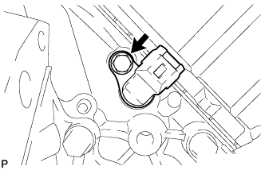 |
Remove the bolt and sensor.
| 2. REMOVE CRANKSHAFT POSITION SENSOR |
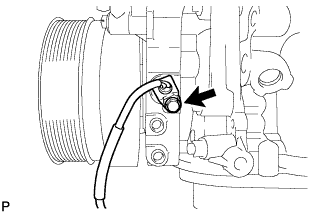 |
Remove the bolt and sensor.
| 3. DISCONNECT NO. 1 OIL COOLER HOSE |
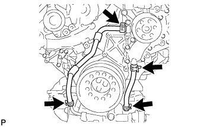 |
| 4. DISCONNECT NO. 2 OIL COOLER HOSE |
| 5. REMOVE CRANKSHAFT PULLEY |
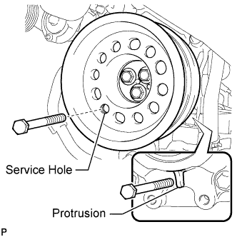 |
Install the 2 bolts to the bolt holes of the crankshaft rear side.
Using a bar, turn the crankshaft until the crankshaft pulley service hole is a little to the left of bottom dead center.
Install a 14 mm x 1.5 pitch service bolt with a length of 70 mm or more to the crankshaft pulley service hole, and hold the crankshaft using the timing chain cover protrusion.
Remove the 3 bolts and crankshaft pulley.
| 6. REMOVE TIMING GEAR COVER SPACER |
 |
Remove the 2 bolts and timing gear cover spacer.
| 7. REMOVE OIL FILTER CAP WITH ELEMENT |
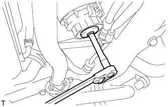 |
Remove the oil filter drain plug.
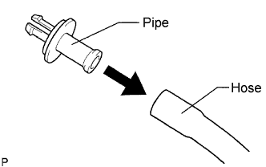 |
Connect a hose with an inside diameter of 15 mm (0.591 in.) to the pipe.
Remove the O-ring from the oil filter drain plug and install it to the drain pipe.
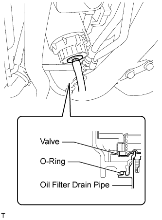 |
Install the oil filter drain pipe to the oil filter cap and drain the engine oil.
Remove the oil filter drain pipe.
Apply a light coat of engine oil to a new O-ring, and install it to the oil filter drain plug.
Install the oil filter drain plug to the oil filter cap.
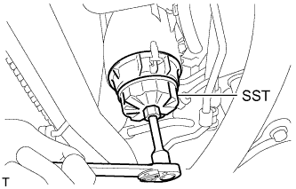 |
Using SST, remove the oil filter cap.
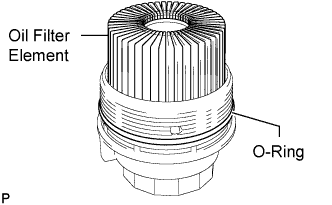 |
Remove the oil filter element and O-ring from the oil filter cap.
| 8. REMOVE OIL PRESSURE SENDER GAUGE ASSEMBLY |
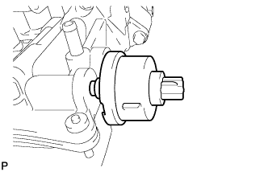 |
Remove the oil pressure sender gauge.
| 9. REMOVE OIL COOLER ASSEMBLY |
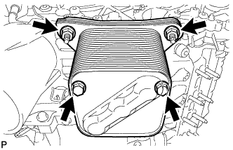 |
Remove the 2 bolts, 2 nuts and oil cooler.
 |
Remove the 2 O-rings and oil cooler gasket.
| 10. REMOVE OIL COOLER RELIEF VALVE ASSEMBLY |
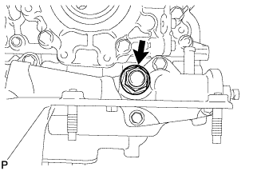 |
Remove the oil cooler relief valve and gasket.
| 11. REMOVE OIL FILTER BRACKET SUB-ASSEMBLY |
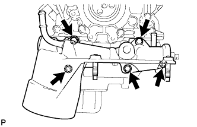 |
Remove the 3 bolts, 2 nuts and oil filter bracket.
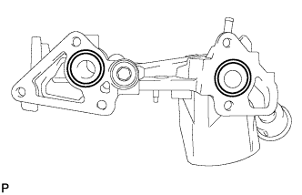 |
Remove the 2 O-rings.
| 12. REMOVE ENGINE OIL LEVEL SENSOR |
 |
Remove the 4 bolts and engine oil level sensor.
Remove the gasket.
| 13. REMOVE OIL PAN DRAIN PLUG |
 |
Remove the oil pan drain plug and gasket.
| 14. REMOVE NO. 2 OIL PAN SUB-ASSEMBLY |
 |
Remove the 10 bolts and 2 nuts.
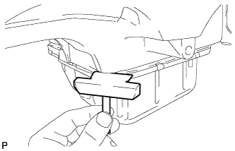 |
Insert the blade of an oil pan seal cutter between the oil pans. Cut through the applied sealer and remove the No. 2 oil pan.
| 15. REMOVE OIL STRAINER SUB-ASSEMBLY |
 |
Remove the 2 bolts and oil strainer.
Remove the O-ring from the oil strainer.
| 16. REMOVE NO. 1 OIL PAN SUB-ASSEMBLY |
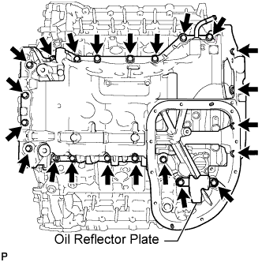 |
Remove the 20 bolts, 2 nuts and oil reflector plate.
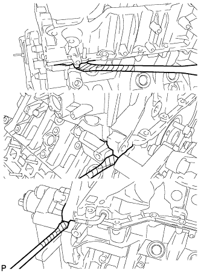 |
Remove the No. 1 oil pan by prying between the No. 1 oil pan and cylinder block with a screwdriver.
 |
Remove the 3 O-rings.
 |
Remove the cylinder block oil hole gasket.
| 17. REMOVE NO. 1 OIL PAN BAFFLE PLATE |
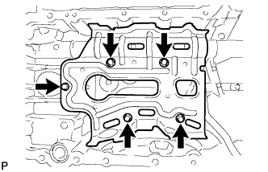 |
Remove the 5 bolts and No. 1 oil pan baffle plate.
| 18. REMOVE INLET OIL PUMP PIPE |
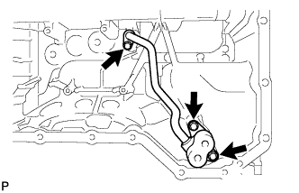 |
Remove the 3 bolts and inlet oil pump pipe.
Remove the O-ring from the inlet oil pump pipe.
| 19. REMOVE OIL REGULATOR ASSEMBLY |
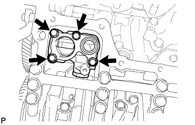 |
Remove the 4 bolts and oil regulator.
| 20. REMOVE REAR ENGINE OIL SEAL RETAINER |
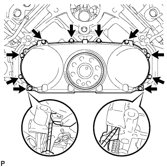 |
Remove the 10 bolts.
Remove the oil seal retainer by prying between the oil seal retainer and cylinder block with a screwdriver.
| 21. REMOVE REAR CRANKSHAFT OIL SEAL |
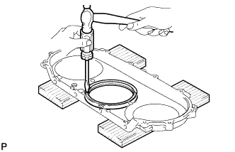 |
Place the oil seal retainer on wooden blocks.
Using a screwdriver and hammer, tap out the oil seal.
| 22. REMOVE OIL PUMP ASSEMBLY |
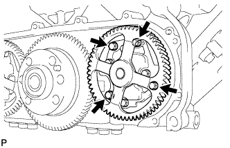 |
Remove the 4 bolts and oil pump.
| 23. REMOVE SCAVENGING PUMP ASSEMBLY |
 |
Remove the 4 bolts and scavenging pump.
| 24. REMOVE OIL FILLER CAP SUB-ASSEMBLY |
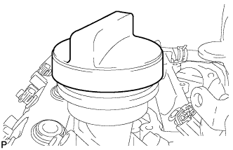 |
| 25. REMOVE OIL FILLER CAP GASKET |
| 26. REMOVE CYLINDER HEAD COVER SUB-ASSEMBLY RH |
 |
Remove the 18 bolts, cylinder head cover and gasket.
| 27. REMOVE NOZZLE HOLDER GASKET RH |
 |
Using a small screwdriver and hammer, remove the 4 nozzle holder gaskets.
| 28. REMOVE NOZZLE HOLDER SEAL RH |
 |
Using a small screwdriver, remove the 4 holder seals by prying the portion between each holder seal and the cutout part of the cylinder head cover.
| 29. REMOVE OIL SEPARATOR ASSEMBLY |
 |
Remove the 3 bolts, oil separator and gasket.
| 30. REMOVE CYLINDER HEAD COVER SUB-ASSEMBLY LH |
 |
Remove the 17 bolts, cylinder head cover and gasket.
| 31. REMOVE NOZZLE HOLDER GASKET LH |
|
Using a small screwdriver and hammer, remove the 4 nozzle holder gaskets.
| 32. REMOVE NOZZLE HOLDER SEAL LH |
 |
Using a small screwdriver, remove the 4 holder seals by prying the portion between each holder seal and the cutout part of the cylinder head cover.
| 33. REMOVE FUEL INJECTOR RH (for Bank 1) |
 |
Remove the union bolt, 4 hollow screws, 5 gaskets and nozzle leakage pipe.
 |
Remove the 4 bolts, 4 washers, 4 nozzle holder clamps and 4 injectors.
Remove the O-ring from each injector.
Remove the 4 injection nozzle seats from the cylinder head.
| 34. REMOVE FUEL INJECTOR LH (for Bank 2) |
 |
Remove the union bolt, 4 hollow screws, 5 gaskets and No. 2 nozzle leakage pipe.
 |
Remove the 4 bolts, 4 washers, 4 nozzle holder clamps and 4 injectors.
Remove the O-ring from each injector.
Remove the 4 injection nozzle seats from the cylinder head.
| 35. REMOVE WATER PUMP ASSEMBLY |
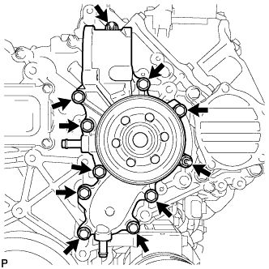 |
Remove the 9 bolts, 2 nuts, water pump and gasket.
| 36. REMOVE TIMING CHAIN COVER PLATE |
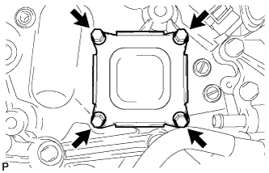 |
Remove the 4 bolts, timing chain cover plate and gasket.
| 37. REMOVE TIMING CHAIN COVER SUB-ASSEMBLY |
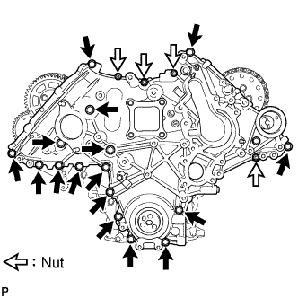 |
Remove the 4 nuts and 16 bolts.
Using a screwdriver, remove the timing chain cover by prying between the timing chain cover and timing gear case.
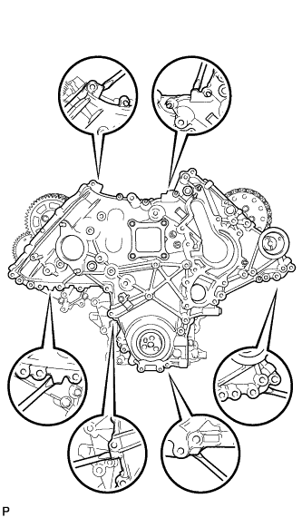 |
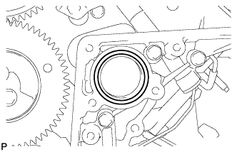 |
Remove the O-ring from the timing gear case.
| 38. REMOVE FRONT CRANKSHAFT OIL SEAL |
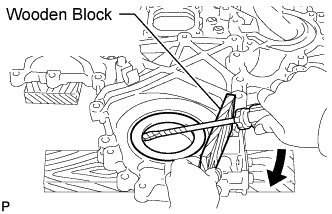 |
Place the timing chain cover on wooden blocks.
Using a screwdriver and wooden block, pry out the oil seal.
| 39. SET NO. 1 CYLINDER TO TDC/COMPRESSION |
Temporarily install the 2 crankshaft pulley set bolts to the crankshaft.
Turn the crankshaft clockwise to set the No. 1 cylinder to TDC.
With the crankshaft key 45° counterclockwise from the top position, check that the timing marks of the RH and LH camshaft timing gears are aligned. If not as specified, turn the crankshaft 1 revolution (360°) and align the timing marks as shown below.
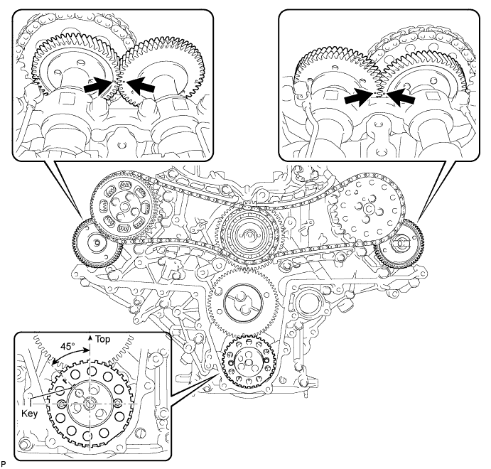
Remove the 2 crankshaft pulley set bolts.
| 40. REMOVE NO. 1 CRANKSHAFT POSITION SENSOR PLATE |
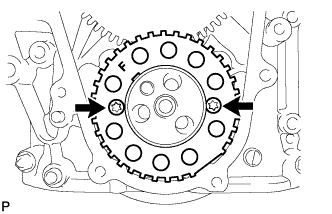 |
Using a T30 "TORX" wrench, remove the 2 screws and crankshaft position sensor plate.
| 41. REMOVE PUMP DRIVE SHAFT GEAR |
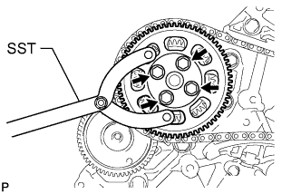 |
Using SST, hold the pump drive shaft gear.
Remove the 4 bolts and pump drive shaft gear.
| 42. REMOVE NO. 1 CHAIN TENSIONER ASSEMBLY |
Push the tensioner slipper away from the tensioner, and move the stopper plate clockwise to release the lock as shown in A.
Push down the tensioner slipper and move the stopper plate counterclockwise to set the lock as shown in B.
Push the tensioner slipper away from the tensioner, and insert a hexagon wrench into the stopper plate hole as shown in C.
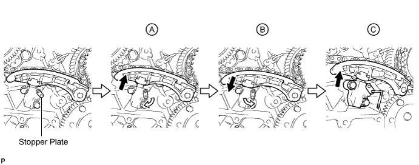
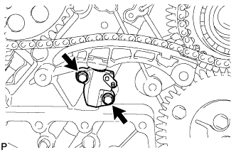 |
Remove the 2 bolts and No. 1 chain tensioner.
| 43. REMOVE NO. 1 CHAIN TENSIONER SLIPPER |
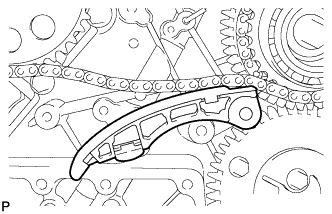 |
| 44. REMOVE NO. 1 CHAIN VIBRATION DAMPER |
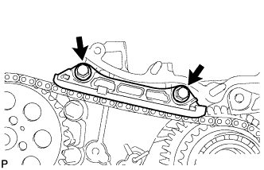 |
Remove the 2 bolts and No. 1 chain vibration damper.
| 45. REMOVE NO. 1 CAMSHAFT TIMING SPROCKET AND NO. 1 TIMING CHAIN |
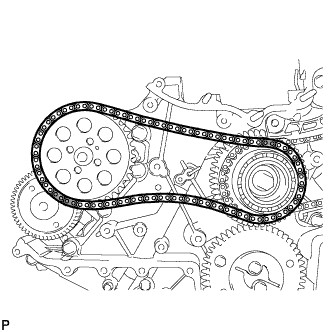 |
| 46. REMOVE NO. 2 CHAIN TENSIONER ASSEMBLY |
Push the tensioner slipper away from the tensioner, and move the stopper plate clockwise to release the lock as shown in A.
Push up the tensioner slipper and move the stopper plate counterclockwise to set the lock as shown in B.
Push the tensioner slipper away from the tensioner, and insert a hexagon wrench into the stopper plate hole as shown in C.
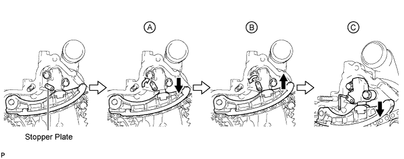
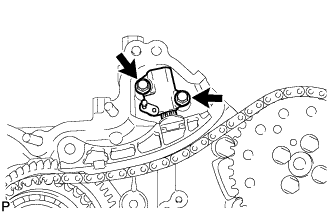 |
Remove the 2 bolts and No. 2 chain tensioner.
| 47. REMOVE NO. 2 CHAIN TENSIONER SLIPPER |
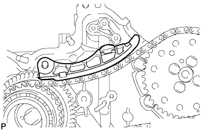 |
| 48. REMOVE NO. 2 CHAIN VIBRATION DAMPER |
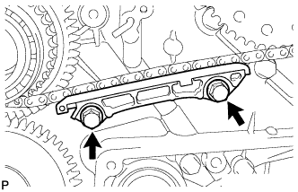 |
Remove the 2 bolts and No. 2 chain vibration damper.
| 49. REMOVE NO. 2 CAMSHAFT TIMING SPROCKET AND NO. 2 TIMING CHAIN |
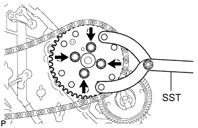 |
Using SST, hold the No. 2 camshaft timing sprocket.
Remove the 4 bolts, No. 2 camshaft timing sprocket and No. 2 timing chain.
| 50. REMOVE FUEL SUPPLY PUMP DRIVE GEAR NUT |
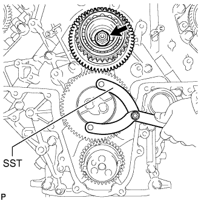 |
Using SST, hold the idle gear.
Remove the nut.
| 51. REMOVE IDLE GEAR ASSEMBLY |
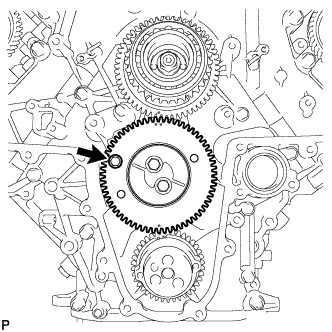 |
Using a 8 mm x 1.25 pitch bolt with a length of 15 mm or more, fix the idle gear in place.
 |
Remove the 2 bolts, idle gear thrust plate and idle gear.
| 52. SEPARATE SUB IDLE GEAR, IDLE GEAR SPRING AND IDLE GEAR |
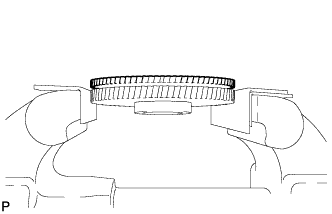 |
Hold the No. 1 idle gear in a vise between aluminum plates.
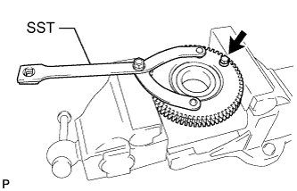 |
Using SST, hole the No. 1 idle gear, and remove the bolt and sub idle gear.
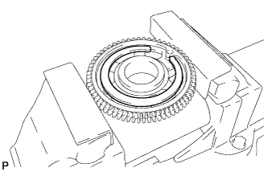 |
Remove the idle gear spring from the idle gear.
| 53. REMOVE NO. 1 IDLE GEAR SHAFT |
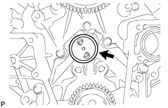 |
| 54. REMOVE FUEL SUPPLY PUMP DRIVE GEAR |
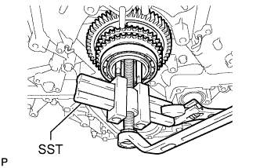 |
Using SST, remove the fuel supply pump drive gear.
| 55. INSPECT RADIAL BALL BEARING |
Turn the bearing, and check that the bearing moves smoothly and quietly.
If it moves roughly or noisily, replace the radial ball bearing.
| 56. REMOVE RADIAL BALL BEARING |
Using SST, remove the radial ball bearing.
| 57. SEPARATE FUEL SUPPLY PUMP DRIVE GEAR AND FUEL SUPPLY PUMP SHAFT SPROCKET |
Hold the fuel supply pump shaft sprocket in a vise between aluminum plates.
Remove the 4 bolts and separate the fuel supply pump drive gear and fuel supply pump shaft sprocket.
| 58. REMOVE STRAIGHT PIN |
Remove the straight pin.
| 59. REMOVE FUEL SUPPLY PUMP ASSEMBLY |
Using a 6 mm hexagon wrench, remove the hexagon bolt. Then remove the 2 nuts and fuel supply pump.
Remove the O-ring.
| 60. REMOVE V-BANK SILENCER |
| 61. REMOVE TIMING GEAR CASE SUB-ASSEMBLY |
Remove the 22 bolts, 2 nuts and timing gear case shown in the illustration.
Remove the 2 O-rings and timing gear case gasket.
| 62. DISCONNECT NO. 2 VACUUM TRANSMITTING HOSE |
| 63. DISCONNECT NO. 3 VACUUM TRANSMITTING HOSE |
| 64. REMOVE NO. 1 VACUUM TRANSMITTING PIPE SUB-ASSEMBLY |
Remove the 2 bolts and No. 1 vacuum transmitting pipe.
| 65. REMOVE NO. 2 VACUUM TRANSMITTING PIPE SUB-ASSEMBLY |
Remove the 3 bolts and No. 2 vacuum transmitting pipe.
| 66. REMOVE NO. 2 TIMING GEAR CASE INSULATOR |
| 67. REMOVE NO. 1 AND NO. 2 CAMSHAFTS |
Using a 6 mm x 1.0 pitch service bolt with a length of 16 mm or more, fix the No. 1 camshaft in place.
Loosen the 2 union bolts.
Uniformly loosen and remove the 20 bolts in the sequence shown in the illustration.
Remove the 2 union bolts and No. 1 and No. 2 oil feed pipes.
Remove the 8 No. 3 camshaft bearing caps and No. 1 camshaft bearing cap.
Remove the No. 1 and No. 2 camshafts.
| 68. REMOVE NO. 2 CAMSHAFT BEARING CAP |
| 69. REMOVE NO. 1 VALVE ROCKER ARM |
Remove the 16 No. 1 valve rocker arms.
| 70. REMOVE NO. 1 VALVE LASH ADJUSTER ASSEMBLY |
Remove the 16 No. 1 valve lash adjusters.
| 71. REMOVE CYLINDER HEAD SUB-ASSEMBLY RH |
Uniformly loosen and remove the 10 bolts and 10 spacers in the sequence shown in the illustration. Then remove the cylinder head.
| 72. REMOVE NO. 1 CYLINDER HEAD GASKET |
| 73. REMOVE NO. 3 AND NO. 4 CAMSHAFTS |
Using a 6 mm x 1.0 pitch service bolt with a length of 16 mm or more, fix the No. 4 camshaft in place.
Loosen the 2 union bolts.
Uniformly loosen and remove the 20 bolts in the sequence shown in the illustration.
Remove the 2 union bolts and No. 3 and No. 4 oil feed pipes.
Remove the 8 No. 3 camshaft bearing caps and No. 4 camshaft bearing cap.
Remove the No. 3 and No. 4 camshafts.
| 74. REMOVE NO. 5 CAMSHAFT BEARING CAP |
| 75. REMOVE NO. 2 VALVE ROCKER ARM |
Remove the 16 No. 2 valve rocker arms.
| 76. REMOVE NO. 2 VALVE LASH ADJUSTER ASSEMBLY |
Remove the 16 No. 2 valve lash adjusters.
| 77. REMOVE CYLINDER HEAD SUB-ASSEMBLY LH |
Uniformly loosen and remove the 10 bolts and 10 spacers in the sequence shown in the illustration. Then remove the cylinder head.
| 78. REMOVE NO. 2 CYLINDER HEAD GASKET |
| 79. REPLACE STUD BOLT |
Intake Pipe:
Using an E8 "TORX" wrench, replace the 4 stud bolts.
No. 3 Intake Manifold:
Using an E8 "TORX" wrench, replace the 2 stud bolts labeled A.
Using an E6 "TORX" wrench, replace the 2 stud bolts labeled B.
Using an E6 "TORX" wrench, replace the stud bolt labeled C.
Oil Filter Bracket:
Using an E8 "TORX" wrench, replace the 2 stud bolts.
No. 1 Oil Pan:
Using an E8 "TORX" wrench, replace the 2 stud bolts labeled A.
Using an E7 "TORX" wrench, replace the 2 stud bolts labeled B.
Timing Chain Cover:
Using an E7 "TORX" wrench, replace the 2 stud bolts labeled A.
Replace the 2 stud bolts labeled B.
Timing Gear Case:
Using an E7 "TORX" wrench, replace the 4 stud bolts.
Remove the 2 stud bolts.
Remove the adhesive from the threads of the timing gear case.
Apply adhesive to 2 or more threads of the 2 stud bolts.
Install the 2 stud bolts.
| 80. REPLACE STRAIGHT SCREW PLUG |
No. 1 Oil Pan:
Using a 10 mm hexagon wrench, replace the straight screw plug and/or gasket.
Using a 14 mm hexagon wrench, replace the straight screw plug and/or gasket.
Oil Filter Bracket:
Using a 10 mm hexagon wrench, replace the straight screw plug and/or gasket.
Timing Gear Case:
Using a 10 mm hexagon wrench, replace the straight screw plug and/or gasket.
| 81. REPLACE CYLINDER BLOCK STRAIGHT SCREW PLUG |
 |
Replace the 2 straight screw plugs and 2 gaskets.
| 82. REPLACE RING PIN |
No. 1 and No. 2 Intake Manifold:
Replace the ring pin.
Cylinder Head:
Replace the ring pin.
V-ribbed Belt Tensioner:
Replace the ring pin.
Timing Chain Case:
Replace the ring pin.
Timing Gear Case:
Replace the ring pin.
Cylinder Head RH:
Replace the ring pin.
Cylinder Head LH:
Replace the ring pin.
| 83. REPLACE CHAIN TENSIONER STRAIGHT PIN |
Replace the straight pin.
| 84. REPLACE TIMING GEAR COVER SET STRAIGHT PIN |
Replace the straight pin.